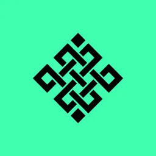

how ritualized are you?
let's find out

Ritual Quiz
Welcome to Ritual Quiz
Take one and unlock your first step to being a ritualist
Start Quiz
Next
Your Score
🎉 Congratulations! You're a true Ritualist! 🎉